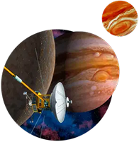
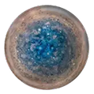

Jupiter
Fifth planet from the Sun
Fifth planet from the Sun
Day9 h 56min
Year11.86Earth years
Mass318Earths
Jupiter has the shortest day of all the planets. It turns on its axis once every 9 hours and 55 minutes.
Jupiter is the third-brightest natural object in the Earth's night sky after the Moon and Venus.


Jupiter has a very strong magnetic field. This is around 14 times stronger than the magnetic field found on Earth – the largest of any planet in the solar system.
Distance from Sun5.2AU
Year11.86Earth years
Mass318Earths
Timeline
- 1610
Galileo spots Jupiter's four largest moons.
- 1979
Voyager 1 and 2 fly by Jupiter.
- 1995
Galileo probe enters Jupiter's atmosphere.
- 2016
Juno arrives at Jupiter.
Hero image: Jupiter